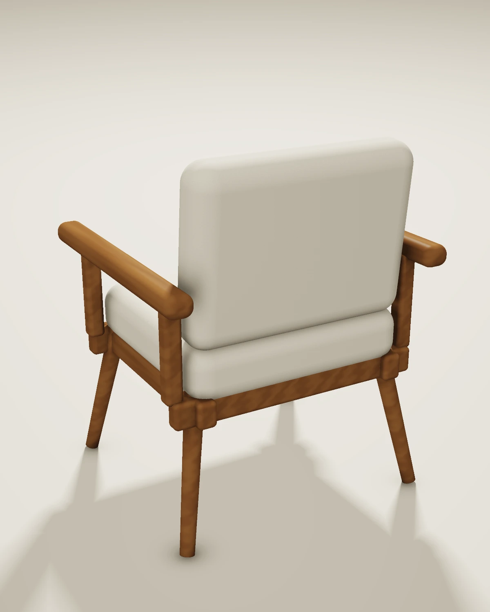

PRODUCT STUDY / 01
LUMA 01
Тёплое дерево. Мягкая форма.
Предметный кейс о пропорциях, фактурах и свете. Один концепт кресла — четыре ракурса и полный оборот камеры.

От предмета к кадру
Форма остаётся.
Меняется взгляд.
Все кадры и анимация рассчитаны из одних параметров сцены. Геометрия сохраняется при смене камеры.
- Материалы
- Тёплое дерево / светлый текстиль
- Состав
- 16 объектов
- Результат
- 4 × PNG · MP4 · GLB · OBJ



MOTION / 360°
Предмет в движении.
6 секунд · 24 fps · 720 × 900
Оборот камеры вокруг той же процедурной сцены. Без звуковой дорожки.
Скачать MP4 ↓Процесс
Из идеи —
в проверяемую сцену.
01 / Геометрия
Подушки со скруглёнными краями, деревянные подлокотники, опоры, царги и наклонные ножки. Размеры заданы в метрах.
02 / Материалы и свет
Процедурные оттенки дерева и текстиля, мягкие тени и контактное затемнение в программном CPU-рендерере.
03 / Камера и экспорт
Четыре изображения и 144 кадра анимации. Геометрия отдельно экспортирована в GLB и OBJ из того же scene.json.
Открытые исходники
Можно рассмотреть ближе.
GLB и OBJ содержат геометрию и базовые цвета материалов. Процедурные фактуры рендера воспроизводятся кодом и не запечены в текстуры модели.
Учебная работа, созданная с помощью кода и ИИ. Без заказчика, коммерческих результатов и инженерной проверки конструкции. Не является производственным проектом и сама по себе не подтверждает самостоятельное владение Blender, 3ds Max или Corona.